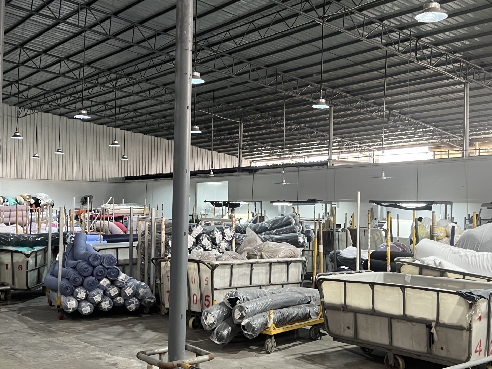

Factory Visits & Business Interpreting in South China
Meet suppliers with Katherine Tu, your English–Chinese interpreter and sourcing contact. Discuss what the factory can make, clarify specifications and agree on what to follow up after the meeting.

Support for your supplier meetings
Factory visits and observations
Agree on what to see before the visit, from production steps and equipment to storage, traceability or quality checks. When the written scope includes a visit report, it separates dated observations, supplier statements and open questions. Photos depend on site permission.
English–Chinese business interpreting
Work through materials, tolerances, sample approvals, lead times and commercial terms in factory meetings or trade fair follow-ups. Send drawings, specifications and key terms in advance so Katherine can prepare for the discussion.
Purchasing and sourcing coordination
For selected projects, we can help identify suppliers, coordinate requests for quotations and samples, and follow up on points agreed during the visit. The scope can include supplier verification and managed sourcing by agreement.
Choose what to book
Interpreting for your existing appointments
If you already have suppliers and meeting times, book interpreting on its own. Share your agenda, meeting locations, working languages and any technical material you can share in advance.
Factory visits with sourcing support
If you need help finding or coordinating suppliers, we can agree on screening, meeting arrangements, on-site interpreting and quote or sample follow-up as one assignment.
If we recommend a supplier or take a commercial role in your transaction, we disclose that role and agree the relevant terms with you before work begins.
Meet Katherine Tu
Katherine founded Taotao Sourcing after working in corporate lending and business risk assessment. She holds a Master of Translation and Interpreting in English and works with overseas buyers on sourcing and supplier communication.
Where we work
Based in Zhaoqing, Guangdong, we arrange visits in Shenzhen, Guangzhou, Foshan, Dongguan, Zhaoqing and nearby manufacturing areas. Scheduling depends on availability, travel and supplier access.
Questions before you book
Can you visit a factory if I cannot travel?
Yes, we can discuss a scoped visit on your behalf. We agree the checklist, site access and reporting format before making arrangements.
Can a visit replace an accredited audit?
No. A visit records what was available to observe on the day. Accredited audits, product certification and regulatory approval require a separate qualified provider.
How are fees quoted?
We quote after reviewing locations, meeting duration, preparation, travel and any sourcing or reporting tasks. You approve the scope and fee before work begins.
Tell us about your visit
In the inquiry form, include your preferred dates and cities, the product or supplier, and whether you need interpreting, factory coordination or both. If you have appointments, add the planned meeting times.